Deron德隆
德隆（Deron）是北航头马名副其实的"老人"。早在 2014 年初（第 50 次会议前后），他就已是俱乐部里最活跃的核心成员之一——在那份《Member Growth》角色排行里，他以 TM、TTM、GE、TTE、CC6 五项任职位列全club第二，仅次于 Peter。一位读博的理工背景青年，却有着出人意料的思辨与幽默：他做主持人时，会把"人工智能会不会威胁人类""撩妹技巧""贫与富""换位思考"这样兼具趣味与深度的题目抛给全场。他主持的即兴环节，从绕口令暖场到别致的双人题，总被纪要称作"精心准备""值得肯定"。
在头马的几年里，德隆几乎把所有角色都站了一遍。他做即兴主持（TTM）的次数最多，被一位会员戏称"真难为我们德隆了"；他也常担任 General Evaluator 与即兴点评官（TTE），逐句点出讲者的闪光与不足。他还登台分享方法论——做过《如何成为出色的即兴主持人》《Question Matters（提问的力量）》这样的经验讲座，把"我怀疑，故我思考"的劲头带给新人。备稿方面，他至少完成到 CC7，2014 年 8 月以《Haste makes waste》登台，被预告称作"高端大气上档次"的演讲。
更难得的是他长年的幕后付出。2014 年几乎每一期会议预告的落款联系人都是"Deron，电话 180-0125-3933"，户外烧烤 outing 的报名也找他——他是那个一直把门开着、把灯留着的人。会员们记得他的标签：年轻、帅气、幽默的博士，自称"快乐老司机"，把元旦晚会的游戏环节玩得满堂欢腾。送别学长学姐时，是他带大家回顾彼此在俱乐部的点滴并颁发纪念奖。从 2014 年的春天到 2017 年元旦那场红彤彤的跨年趴，德隆把最好的几年青春，留在了这个每周五晚的英文舞台上。
完整足迹 · 49 次出现（点开，每条可跳转原文）
- 2014-03-06第50次 · 担任即兴演讲主持
- 2014-03-20第52次 · 担任总点评官
- 2014-03-27第53次 · 担任即兴演讲点评官
- 2014-04-04第54次 · 担任第54次会议主持人
- 2014-04-08成长统计:共担任5次角色TM,TTM,GE,TTE,CC6
- 2014-04-17第56次 · 担任Jason演讲的点评官
- 2014-04-22作为户外烧烤活动联系人
- 2014-04-25第57次 · 担任Rena演讲的点评官
- 2014-05-09第58次 · 担任即兴演讲主持
- 2014-05-16第59次 · 担任总点评官
- 2014-05-30作为会议联系人提供帮助
- 2014-06-13第63次 · 担任第63次会议主持人
- 2014-06-19第64次 · 担任即兴演讲主持,并带领回顾环节及联系人
- 2014-06-27第65次 · 作为会议联系人提供帮助
- 2014-07-04Welcome Letter for Beihang Toastmasters
- 2014-08-21第67次 · Welcome Letter for 67th Meeting @Beihang
- 2014-08-28第68次 · Welcome Letter for 68th Meeting @Beihang
- 2014-09-11第70次 · Welcome Letter for 70th Meeting @Beihang
- 2014-09-18第71次 · Welcome Letter for 71th Meeting @Beihang
- 2014-09-25第71次 · Welcome Letter for 71th Meeting @Beihang
- 2014-09-26第72次 · Blind Date @BeihangTMC 72nd Meeting on F
- 2014-10-09第73次 · Help Each Other @BeihangTMC 73rd Meeting
- 2014-10-16第74次 · Make Me Happy @BeihangTMC 74th Meeting o
- 2014-10-23第75次 · Travel @BeihangTMC 75th Meeting on Fri O
- 2014-10-31第76次 · Halloween @BeihangTMC 76th Meeting on Fr
- 2014-11-07第77次 · Movies @BeihangTMC 77th Meeting on Fri N
- 2014-11-13第78次 · Autumn @BeihangTMC 78th Meeting on Fri N
- 2014-11-21第79次 · Workplace freshman @BeihangTMC 79th Meet
- 2014-12-04第80次 · Single or Double @BeihangTMC 80th Meetin
- 2014-12-05第80次 · Single or Double @BeihangTMC 80th Meetin
- 2014-12-11第81次 · The First Time @BeihangTMC 81st Meeting
- 2014-12-19第82次 · My 2014 @BeihangTMC 82nd Meeting on Fri
- 2014-12-26第83次 · Farewell Party @BeihangTMC 83rd Meeting
- 2016-03-03第126次 · 126th meeting minutes of Beihang TMC
- 2016-03-10第128次 · 2016 Spring Contest@Beihang TMC 128th Me
- 2016-03-16第128次 · Minutes of 2016 Spring Contest@Beihang T
- 2016-03-24第130次 · Sheldon Like@BeihangTMC 130th Meeting 19
- 2016-04-13第132次 · Beihang&Ameco Excellent联合meeting@minutes
- 2016-04-27聊撩@Beihang TMC 135次（中文）会议 19:30 4月29日 新主
- 2016-05-12第137次 · Tender@ Beihang TMC 137th Meeting 19:30
- 2016-05-17第137次 · Tender@minutes of Beihang TMC 137th Meet
- 2016-05-30第139次 · 童真@minutes of Beihang TMC 139th Meeting
- 2016-06-02第140次 · Jack & Rose@ Beihang TMC 140th Meeting 1
- 2016-06-05第140次 · Jack and Rose@minutes of Beihang TMC 140
- 2016-06-14第141次 · Let’s celebrate together@minutes of Beih
- 2016-08-25第150次 · Night@BeihangTMC 150th Meeting 19:30 Aug
- 2016-10-20第156次 · R.M.B.@Beihang TMC 156th Meeting@19:30 O
- 2016-10-26第156次 · R.M.B. @minutes of 北航 TMC 156rd Meeting
- 2017-01-06第164次 · 元旦趴~~@minutes of Beihang TMC164th Meetin
闯关之路 · Competent Communication
做过的演讲 · 2 场
担任过的会议角色
里程碑
- 2014-03 活跃于第50次会议前后 ↗已是俱乐部核心，担任即兴主持，开启长期的台前幕后投入。
- 2014-04-08 角色排行club第二 ↗《Member Growth》统计中以TM/TTM/GE/TTE/CC6位列全club第二，仅次于Peter。
- 2014-08-22 备稿演讲 CC7《Haste Makes Waste》 ↗登台分享"欲速则不达"的体悟。
- 2016-03-11 参加2016春季比赛即兴赛 ↗在人机大战话题上持"正方"，论证人工智能或将威胁人类。
- 2017-01 主持元旦跨年晚会 ↗自称"快乐老司机"主持游戏环节，是其在档案中可见的最后一次亮相。
为俱乐部做的事
- 长期担任俱乐部对外联系人：2014年几乎每期会议预告落款都是他的电话(180-0125-3933)，是会员与访客的第一接触点。
- 主持组织户外活动：负责2014年户外烧烤outing的报名与统筹。
- 多次担任即兴主持，以兼具趣味与深度的题目活跃全场、培养新人开口表达。
- 作为总点评官与点评官，逐句点评讲者，帮助大家发现闪光点与改进空间。
- 主讲经验讲座，把"如何做好即兴主持""如何提出好问题"等方法传授给新会员。
- 在送别会上带领大家回顾老会员的贡献并颁发纪念奖，维系俱乐部的情感与传承。
照片墙 · 时间线
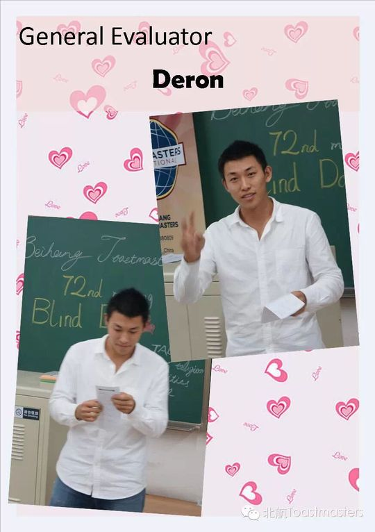
✓ ✓
✓ ✓
✓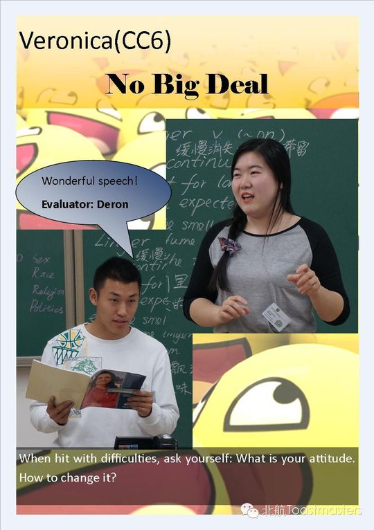
✓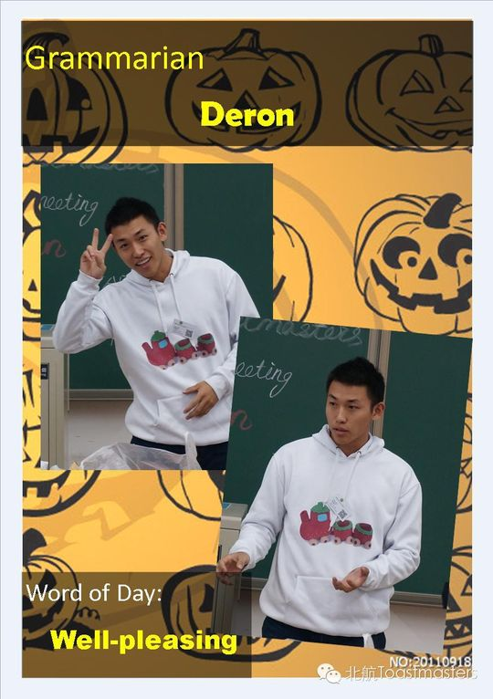
✓ ✓
✓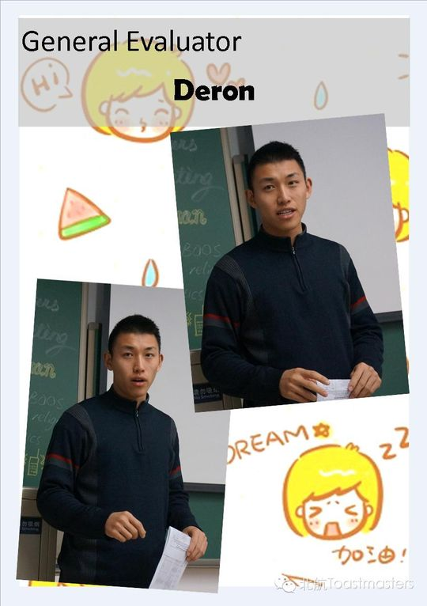
✓ ✓
✓ ✓
✓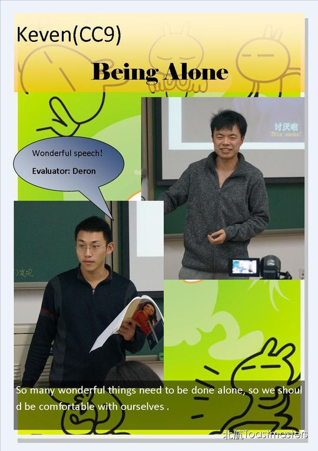
✓ ✓
✓ ✓
✓ ✓
✓ ✓
✓ ✓
✓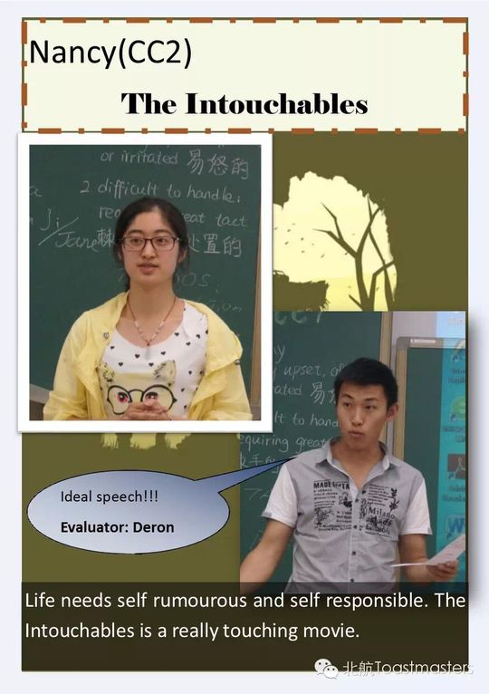
✓ ✓
✓ ✓
✓ ✓
✓ ✓
✓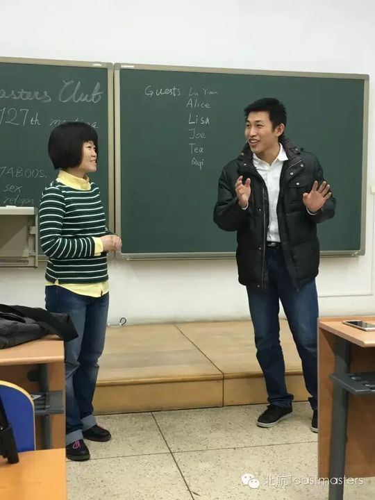
✓ ✓
✓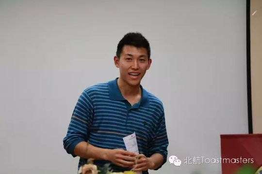
✓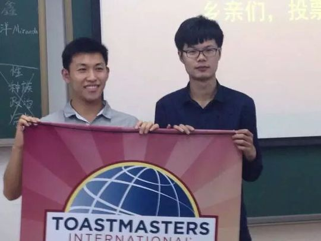
✓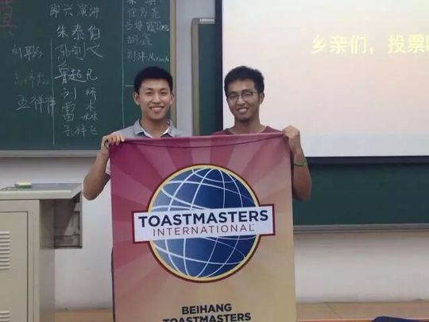
✓ ✓
✓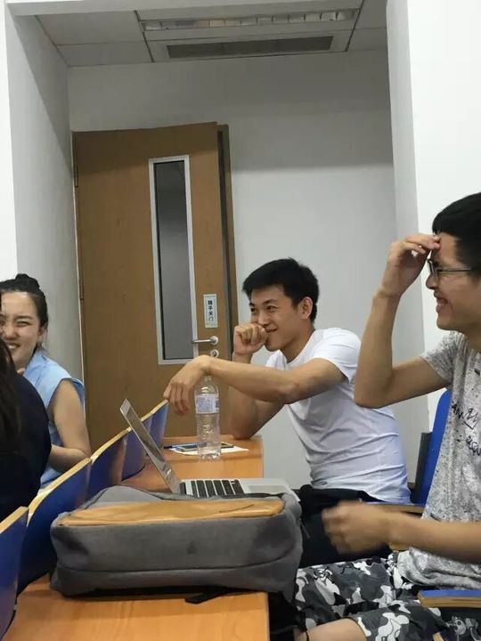
✓ ✓
✓